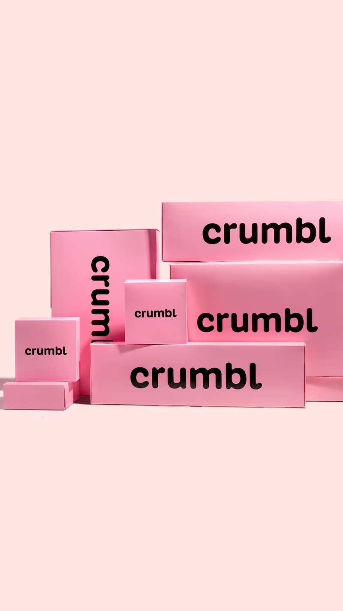
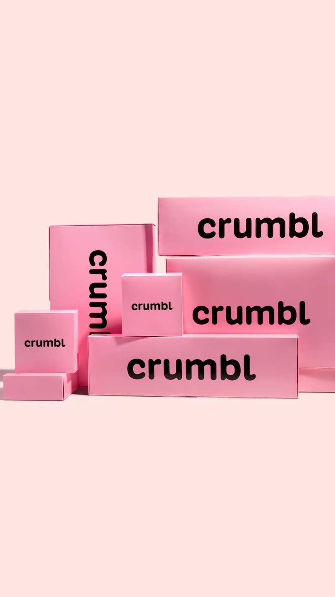
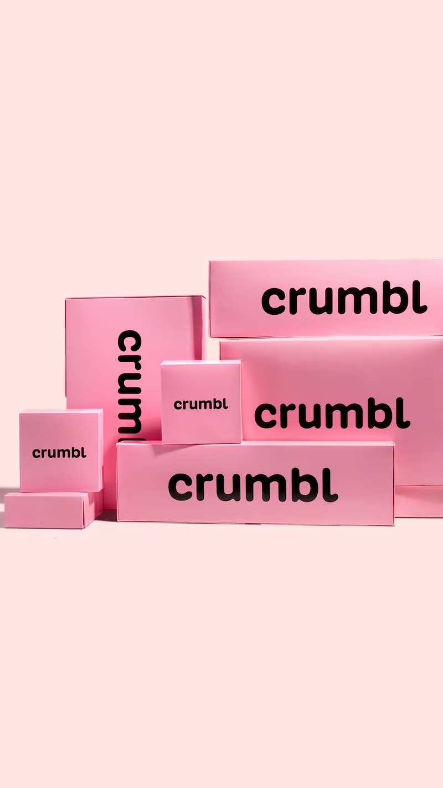

Created in 2017 when co-founders Jason McGowan and Sawyer Hemsley teamed up on a quest to bake the perfect chocolate chip cookie, they dreamt of bringing people together over a box of the best cookies in the world. Today, our franchises have reached across the nation and expanded internationally—all inspired by one big dream and the perfect ingredients that started it all.

With the genius idea of structuring the bakery as an open-concept kitchen, Crumbl provides customers a first-hand experience watching as their cookies are mixed, balled, and baked! Eventually, Crumbl’s business grew to include more flavors and services like delivery, catering, and a weekly rotating menu.

Our delicious cookies and desserts wouldn’t be complete without the iconic pink packaging! Crumbl’s boxes are designed perfectly to fit each cookie and dessert side by side. The brand’s most popular and notable 4-Pack pink box was developed in 2018 by founder Sawyer Hemsley and his fellow college classmates. The unique shape and the brand’s signature pink add a special touch to every Crumbl experience.